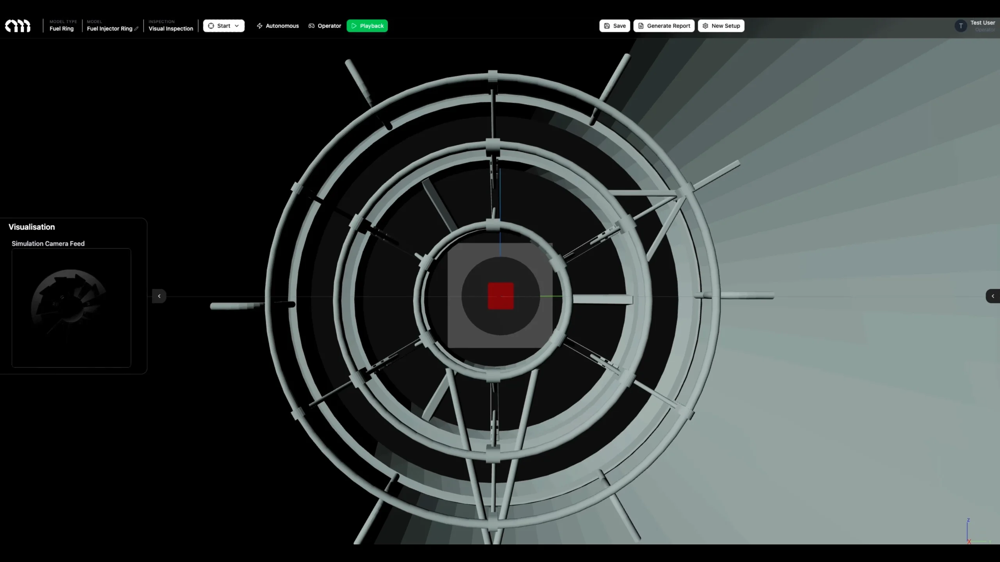
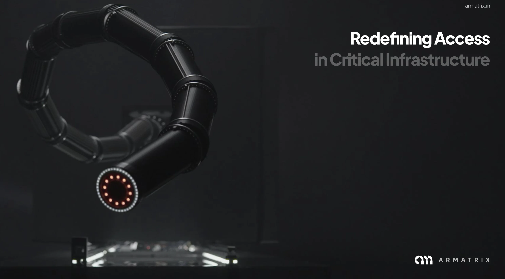
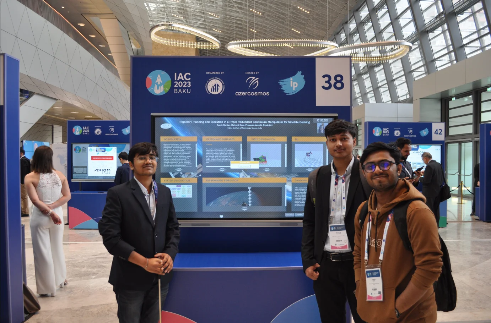

Stories from the frontier of robotics innovation. Deep dives into technology, applications, and the future we're building.

Why most robotics companies fail to build defensible moats, and how hardware that accesses previously unreachable spaces creates proprietary data that compounds over time.

Why physical access is the fundamental constraint in industrial automation, and how continuum robotics solves the geometry problem that rigid robots cannot.

The story of how three IIT Kanpur students turned their IAC award-winning research into a robotics startup, from the first fellowship to building proof of concepts.